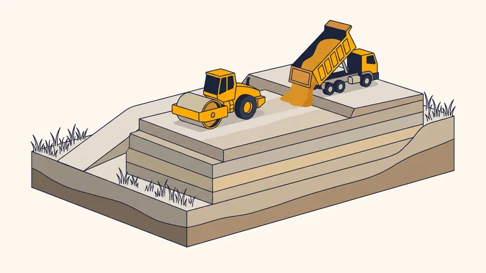

Prix Remblai Terrain au m³ en 2026 : Remblaiement & Apport de Terre
Vous devez rehausser un terrain en contrebas, combler une excavation, créer une plateforme stable ou préparer le fond de forme d'une dalle ? Le remblai de terrain est une étape clé qui détermine la durabilité de tout ouvrage posé dessus. Dans ce guide d'expert, nous détaillons les prix du remblai au m³ en 2026, le coût de l'apport de terre et du tout-venant, ainsi que les techniques de remblaiement et de compactage employées à Aix-en-Provence et en PACA.

Qu'est-ce que le remblai d'un terrain ?
Le remblai désigne l'opération qui consiste à apporter et mettre en place des matériaux (terre, tout-venant, grave, sable) afin de rehausser, combler ou niveler un terrain. C'est l'inverse du déblai, qui consiste à enlever de la terre pour creuser ou abaisser un sol. Sur un chantier de terrassement, déblai et remblai sont les deux faces d'une même opération : l'objectif d'un terrassier est souvent d'équilibrer les deux pour limiter les apports et les évacuations coûteux.
Les principaux usages du remblaiement sont les suivants :
- Rehausser un terrain en contrebas pour le mettre au niveau de la voirie ou d'une parcelle voisine
- Combler une ancienne piscine, une fosse, une cave ou une excavation
- Créer une plateforme stable et plane pour une construction, un parking ou une terrasse
- Préparer le fond de forme sous une dalle béton, une voirie ou un dallage, avec un matériau compactable

Prix du remblai au m³ par matériau en 2026
Le coût du remblai dépend d'abord du matériau choisi. Voici les fourchettes de prix constatées en 2026 en région Provence-Alpes-Côte d'Azur, en fourniture livrée sur chantier :
| Matériau de remblai | Prix fourni-livré (HT) | Usage recommandé |
|---|---|---|
| Terre de remblai (terre saine) | 15 - 35 €/m³ | Rehausse de jardin, modelage, zones végétalisées |
| Tout-venant 0/80 | 20 - 40 €/m³ | Plateforme, comblement, fond de forme |
| Grave concassée 0/31,5 | 28 - 50 €/m³ | Remblai sous dalle, sous voirie, portance élevée |
| Sable de remblai | 25 - 45 €/m³ | Lit de pose réseaux, enrobage canalisations |
| Grave calcaire locale (PACA) | 22 - 42 €/m³ | Plateforme, remblai compactable, accès |
Ces tarifs correspondent à la fourniture livrée et n'incluent pas encore la mise en oeuvre (régalage, compactage) ni la location éventuelle d'engins. En réutilisant les déblais du chantier sains comme remblai, vous pouvez réduire ce poste de manière significative.
Détail des postes de coût d'un remblaiement
Un devis de remblaiement complet se décompose en plusieurs postes. Voici un tableau détaillé pour comprendre où va votre budget :
| Poste | Prix indicatif (HT) | Précisions |
|---|---|---|
| Fourniture du matériau | 15 - 50 €/m³ | Selon le matériau choisi (voir tableau ci-dessus) |
| Transport / livraison | 6 - 18 €/m³ | Selon distance carrière-chantier et accès |
| Mise en oeuvre + compactage par couches | 10 - 25 €/m³ | Régalage et compactage par couches de 20-30 cm |
| Location engin (pelle / chargeuse) | 350 - 700 €/jour | Avec ou sans chauffeur selon prestation |
| Location compacteur / plaque vibrante | 80 - 250 €/jour | Rouleau vibrant ou plaque selon surface |
| Géotextile (si nécessaire) | 2 - 5 €/m² | Pose entre sol en place et remblai |
En consolidé, un remblai fourni-livré-posé et compacté revient en moyenne entre 30 et 70 €/m³ en région PACA, selon le matériau, le volume et l'accessibilité. Pour estimer votre besoin, consultez notre guide comment calculer le volume de terrassement.
Bien choisir son matériau de remblai
Le choix du matériau de remblai conditionne la stabilité de l'ouvrage. Une erreur fréquente consiste à remblayer sous une dalle avec de la terre : celle-ci se tasse, retient l'eau et provoque inévitablement des fissures.
Remblai sous dalle ou sous voirie
Pour tout ouvrage porteur (dalle béton, dallage, allée carrossable, voirie), il faut un matériau compactable et drainant : grave concassée 0/31,5 ou tout-venant 0/80. Ces graves se compactent par couches pour atteindre une portance élevée et stable dans le temps. Jamais de terre végétale sous une dalle.
Remblai pour rehausser un jardin
Pour une rehausse de terrain végétalisé, on emploie de la terre de remblai saine, éventuellement recouverte d'une couche de terre végétale pour les plantations. Ce remblai supporte un compactage plus léger.
Remblai en tranchée et autour des réseaux
L'enrobage des canalisations se fait avec du sable ou un matériau fin, sans cailloux agressifs, pour protéger les tuyaux. Le remblai supérieur est ensuite compacté par couches successives.
Obtenez Votre Devis Remblai Gratuit
Chez STP Terrassement, nous fournissons, livrons et mettons en oeuvre vos remblais à Aix-en-Provence et dans toute la région PACA. Devis détaillé, transparent et sans engagement.
Demandez votre devis gratuitLa technique : compactage, géotextile et drainage
Un remblai de qualité ne se résume pas à déverser des matériaux. La technique de mise en oeuvre fait toute la différence sur la durée.
Le compactage par couches
C'est le point le plus important. Le remblai doit être mis en place et compacté par couches successives de 20 à 30 cm, jamais en une seule fois. Chaque couche est nivelée puis compactée au rouleau vibrant ou à la plaque vibrante avant la suivante. Un remblai non compacté se tasse de 10 à 20 % dans les mois qui suivent, provoquant des tassements différentiels qui fissurent les dalles et déforment les revêtements.
Le géotextile
Sur sol meuble, argileux ou humide, un géotextile posé entre le sol en place et le remblai empêche le mélange des matériaux, répartit les charges et améliore le drainage. Il est très utile sur les sols argileux fréquents dans certains secteurs de PACA.
Le drainage et la pente
Un remblai doit toujours intégrer une gestion de l'eau : pente d'écoulement, drain périphérique si nécessaire, matériau drainant en pied. L'eau stagnante est l'ennemie d'un remblai stable, surtout lors des épisodes pluvieux méditerranéens intenses.
Spécificités du remblai en région PACA
La région Provence-Alpes-Côte d'Azur présente quelques particularités pour les travaux de remblai :
- Matériaux locaux calcaires : les carrières d'Aix-en-Provence et des environs fournissent des graves calcaires de bonne portance, économiques car peu transportées
- Gestion des pentes : le relief provençal impose souvent de créer des plateformes en remblai stabilisées par des soutènements ou des talus compactés
- Sols argileux ponctuels : dans certains secteurs, l'argile gonflante impose un géotextile et un soin particulier au drainage
- Réemploi des déblais : valoriser sur place les déblais sains issus du creusement réduit nettement le coût d'apport et d'évacuation
Réemployer ses déblais : la meilleure économie
Sur un chantier de terrassement, les terres extraites lors du creusement (déblais) peuvent souvent être réutilisées en remblai, à condition d'être saines, non polluées et de granulométrie adaptée. Ce réemploi vous fait économiser deux fois : sur l'apport de matériau neuf et sur l'évacuation en décharge, qui représente un poste lourd. Pour bien évaluer ce poste, consultez notre guide sur le prix d'évacuation des gravats et déblais. Un bon terrassier établit le mouvement des terres du chantier (déblai/remblai) afin d'équilibrer au maximum les volumes.
Exemple de chantier réel à Aix-en-Provence
Remblaiement d'une plateforme à Venelles
Projet : Création d'une plateforme stabilisée pour un garage et une aire de stationnement sur un terrain en pente.
Localisation : Venelles, au nord d'Aix-en-Provence.
Surface : 180 m² de plateforme, 95 m³ de remblai nécessaires sur une hauteur moyenne de 55 cm.
Défis rencontrés : Le terrain présentait une pente marquée et un sol argileux retenant l'eau en partie basse, avec un risque réel de tassement de la future plateforme.
Solution STP : Nous avons d'abord décapé la zone, posé un géotextile de séparation sur le sol argileux, puis mis en oeuvre une grave calcaire locale 0/80 par couches de 25 cm, chacune compactée au rouleau vibrant. Un drain périphérique a été intégré en pied de talus pour évacuer les eaux. Une partie des déblais sains issus du décaissement amont a été réemployée, réduisant l'apport extérieur de près de 25 m³.
Résultat : Plateforme livrée parfaitement plane et compactée, prête à recevoir une dalle béton. Facture finale alignée sur le devis (4 380 € TTC) grâce au réemploi des déblais et au choix d'un matériau de carrière proche.
Les erreurs courantes à éviter
- Remblayer sous une dalle avec de la terre. La terre se tasse et retient l'eau : la dalle fissure à coup sûr. Utilisez une grave compactable.
- Ne pas compacter par couches. Déverser tout le remblai en une fois empêche un compactage homogène et garantit des tassements ultérieurs.
- Oublier le géotextile sur sol argileux ou humide. Sans séparation, le remblai s'enfonce dans le sol en place et perd sa portance.
- Négliger le drainage et la pente. Un remblai sans gestion de l'eau se déstabilise au premier épisode pluvieux intense.
- Sous-estimer le volume à cause du tassement. Il faut prévoir 15 à 25 % de matériau supplémentaire pour compenser le tassement après compactage.
- Acheter du matériau loin du chantier. Le transport pèse lourd dans le prix au m³ : privilégiez une carrière locale.
Questions fréquentes
Quel est le prix d'un remblai de terrain au m³ en 2026 ?
Le prix d'un remblai de terrain se situe entre 15 et 45 €/m³ fourni-livré en 2026, selon le matériau choisi. La terre de remblai coûte 15 à 35 €/m³, le tout-venant 0/80 entre 20 et 40 €/m³. En ajoutant la mise en oeuvre et le compactage, comptez 30 à 70 €/m³ posé en région PACA.
Quelle différence entre remblai et déblai ?
Le déblai consiste à enlever de la terre pour creuser ou abaisser un terrain, tandis que le remblai consiste à apporter et mettre en place des matériaux pour rehausser, combler ou niveler. Un chantier équilibré réutilise les déblais en remblai pour limiter les coûts d'évacuation et d'apport.
Quel matériau choisir pour remblayer un terrain ?
Pour un remblai sous dalle ou sous voirie, on utilise une grave concassée ou un tout-venant 0/80 compactable. Pour rehausser un jardin ou créer une zone végétalisée, on emploie de la terre de remblai. Il ne faut jamais remblayer sous une dalle avec de la terre, qui se tasse et provoque des fissures.
Pourquoi le compactage du remblai est-il indispensable ?
Le compactage par couches de 20 à 30 cm évite les tassements différentiels qui fissurent les dalles et déforment les revêtements. Sans compactage, le remblai se tasse naturellement de 10 à 20 % dans les mois qui suivent, compromettant toute construction posée dessus.
Combien coûte le remblaiement d'un terrain de 100 m² ?
Pour rehausser un terrain de 100 m² sur 30 cm, soit 30 m³ de matériau, comptez entre 1 200 € et 2 800 € TTC fourni-livré-posé selon le matériau et le compactage. La fourchette monte si l'accès est difficile ou si un géotextile est nécessaire.
Peut-on réutiliser les déblais du chantier comme remblai ?
Oui, à condition que les déblais soient sains, non pollués et de granulométrie adaptée. Réutiliser les terres extraites en remblai permet d'économiser à la fois sur l'apport de matériaux et sur l'évacuation en décharge, soit souvent 20 à 40 % du budget terrassement.
Faut-il un géotextile sous un remblai ?
Un géotextile est recommandé entre le sol en place et le remblai pour empêcher le mélange des matériaux, stabiliser la portance et faciliter le drainage. Il est quasi indispensable sur sol argileux ou humide, fréquent dans certaines zones de PACA.
Quel volume de remblai prévoir pour mon terrain ?
Le volume de remblai se calcule en multipliant la surface par la hauteur à combler (longueur x largeur x épaisseur en mètres). Il faut ensuite ajouter 15 à 25 % pour compenser le tassement après compactage. Un terrassier vous établit ce métré précis lors de la visite.
Pour aller plus loin
Pourquoi faire appel à un pro comme STP Terrassement
Confier votre projet de remblai à STP Terrassement, c'est s'appuyer sur une entreprise locale implantée à Simiane-Collongue (13109) et intervenant chaque jour à Aix-en-Provence et dans toute la région PACA. Nos équipes maîtrisent l'ensemble de la chaîne : choix du matériau adapté à votre usage, approvisionnement en carrières locales, mise en oeuvre par couches et compactage soigné, pose de géotextile et gestion du drainage. Forts d'une garantie décennale en cours de validité et de 15 ans d'expérience cumulée sur des chantiers similaires, nous établissons un devis détaillé gratuit et sans engagement, nous optimisons le mouvement des terres pour réduire vos coûts et nous tenons le budget validé. Choisir STP, c'est la garantie d'un remblai stable et durable. Demandez votre devis gratuit en ligne, écrivez-nous via notre page contact ou appelez-nous au 07 45 14 20 49 pour échanger directement avec un chargé d'affaires.